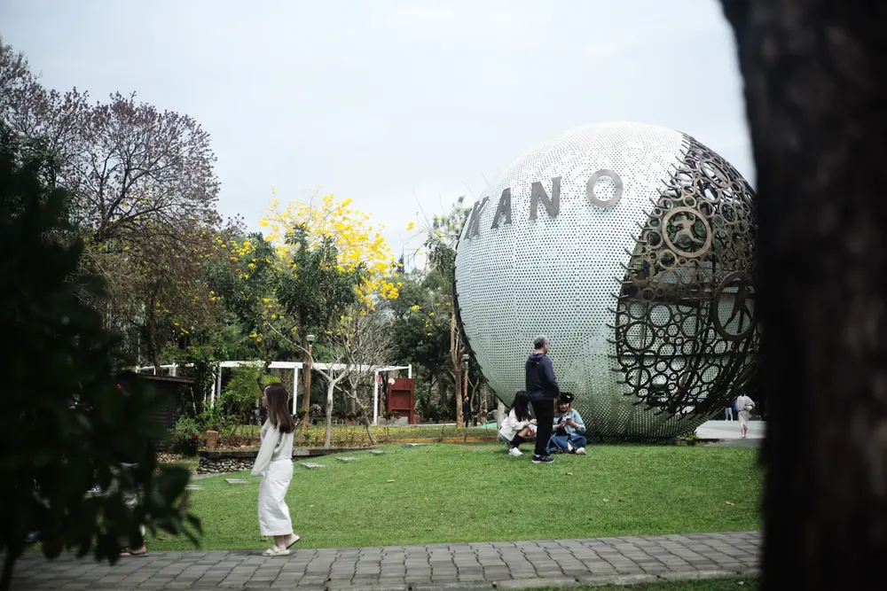

嘉義 · 棒球記憶
嘉義棒球場｜KANO 的棒球記憶
KANO 是「嘉義農林學校」棒球隊的簡稱。1931 年，嘉農首度進軍日本夏季甲子園便勇奪亞軍，讓嘉義成為臺灣棒球史的重要起點。
因此，嘉義棒球場旁的 KANO 裝置，不只是地名標誌，也是在紀念嘉農球員跨越族群、堅持到底的棒球精神。
一顆不能投、不能打的巨大棒球，裝著嘉義近百年的棒球記憶。
照片不一定偉大，記下來就可能變成一場小實驗。

KANO 是「嘉義農林學校」棒球隊的簡稱。1931 年，嘉農首度進軍日本夏季甲子園便勇奪亞軍，讓嘉義成為臺灣棒球史的重要起點。
因此，嘉義棒球場旁的 KANO 裝置，不只是地名標誌，也是在紀念嘉農球員跨越族群、堅持到底的棒球精神。
一顆不能投、不能打的巨大棒球，裝著嘉義近百年的棒球記憶。